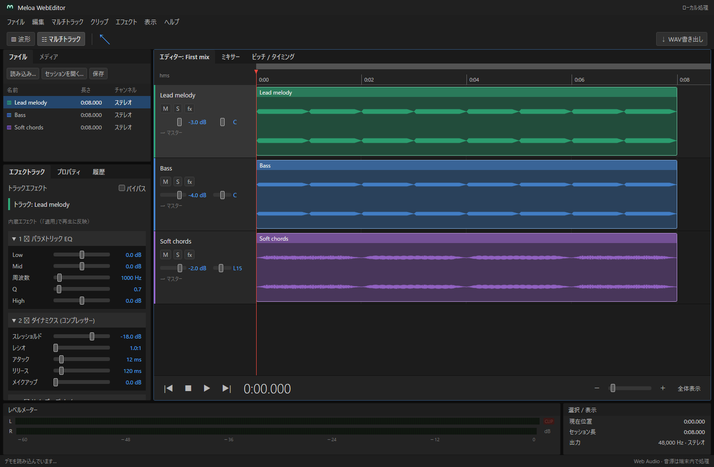

音源を、並べる。
WAV・MP3・FLAC・OGGを読み込み。最大12トラックを重ねて、クリップの位置を調整。
音を重ねる。バランスを整える。
思い描いた響きを、ひとつの音源に。
meloa_webは、あなたの小さなミキシングルームです。
ホーム画面から、すぐにMIXを始められます。
インストールは無料。アカウントも不要です。
まずはブラウザーで使ってみる →
WAV・MP3・FLAC・OGGを読み込み。最大12トラックを重ねて、クリップの位置を調整。
音量とパンを整えて、EQやリバーブをプラス。ピッチシフターに加え、ノートごとの音程や発音位置も編集できます。
48 kHz / 24 bitのステレオWAVに書き出し。音源を含むセッション保存で、続きはまた後で。
最初の読み込みが完了すれば、オフラインでも起動。
作業は端末内に自動保存されます。大切なMIXは、セッションファイルでも保存してください。